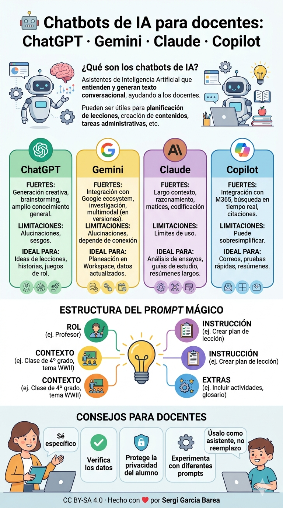
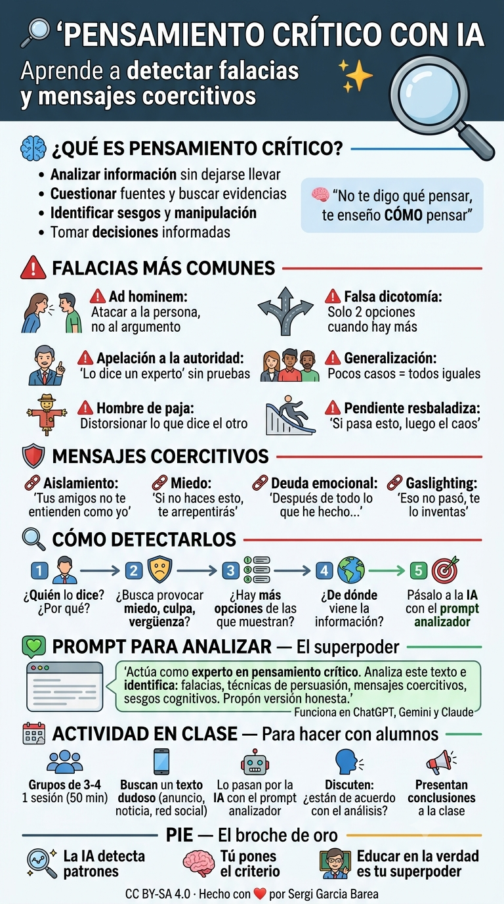
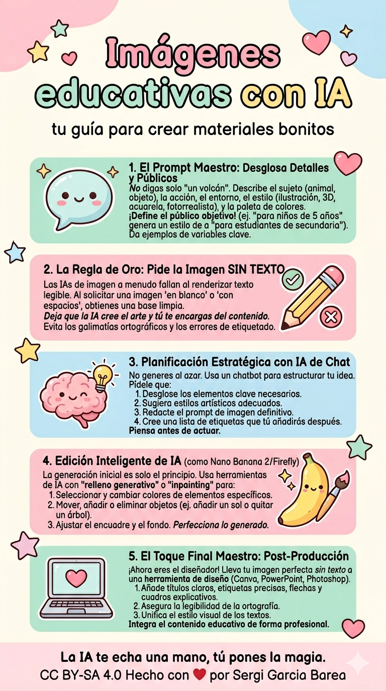
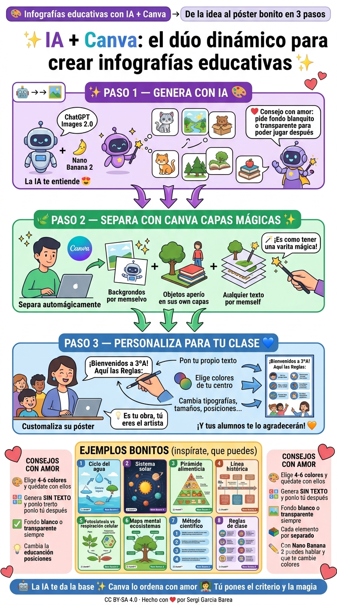
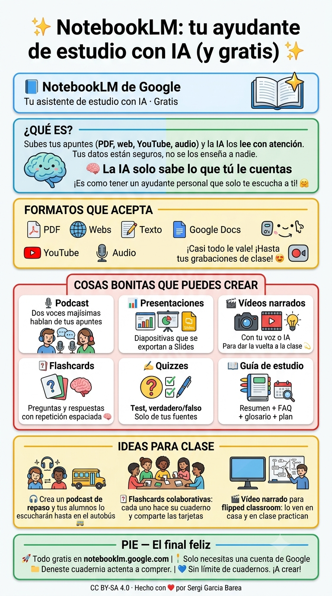
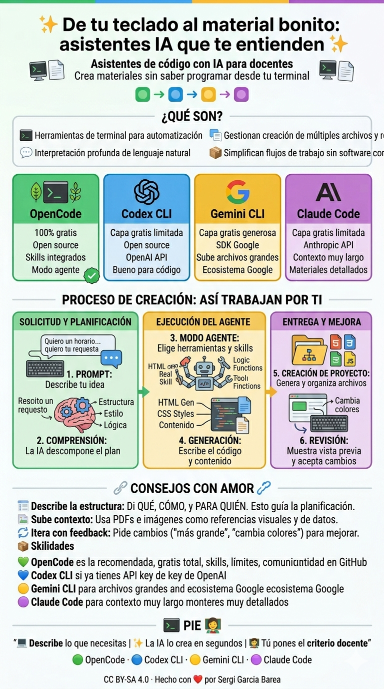

Un curso práctico para que el profesorado aprenda a usar la inteligencia artificial en el aula — ordenado por dificultad, con ejemplos reales, audio narrado y PDF descargable.
Ordenadas por dificultad. Cada una incluye audio narrado + PDF imprimible.
Los principales chatbots de IA explicados para el aula: cómo funcionan, cómo construir prompts efectivos y 8 ejemplos prácticos para clase, tutoría, evaluación y planificación.

🔍Aprende a usar la IA como analizador de discursos: identifica falacias lógicas, mensajes coercitivos y sesgos en textos reales. Incluye actividad práctica para clase.

🔍Uso de ChatGPT Images 2.0 y Nano Banana 2 para generar ilustraciones científicas, mapas conceptuales, infografías, worksheets y materiales visuales para cualquier materia y nivel.

🔍Flujo completo: genera fondos y elementos con IA, luego combínalos en Canva con Capas Mágicas (separación automática de objetos) para crear infografías educativas sin saber diseñar.

🔍Asistente de investigación con IA: sube documentos, haz preguntas, genera resúmenes, guías de estudio, podcasts con Audio Overviews y mucho más.

🔍OpenCode, Codex CLI, Gemini CLI y Claude Code: herramientas que crean materiales educativos desde la terminal sin saber programar. 8 ejemplos prácticos: circulares, horarios, emails, registros, exámenes, diplomas…

🔍Formación en IA para Docentes es un conjunto de 6 presentaciones interactivas diseñadas para que el profesorado aprenda a usar la inteligencia artificial en el aula — sin tecnicismos, con ejemplos reales y recursos listos para llevar a clase.
🎯 Para qué sirve
Ideales para claustros, seminarios, grupos de trabajo o formación individual. Cada presentación está lista para proyectar y explicar.
⭐ Consejo
Empieza por la n.º 1 si eres nuevo en IA. Cada una dura ~10-15 min con audio. Puedes hacerlas en orden o saltar a la que más te interese.
🎙️ Audio narrado
Voz natural diapositiva a diapositiva. La narración se activa al hacer clic. Puedes silenciar con el botón 🔊 si prefieres leer.
📄 PDF descargable
Cada presentación tiene un PDF imprimible. Pulsa el botón rojo o añade ?print-pdf#/ a la URL.
✨ Truco: usa las flechas del teclado ← → para navegar y ESC para ver todas las diapositivas de golpe.
Pulsa "Presentación" para ver los slides
Al pasar diapositiva. Pulsa 🔊 para silenciar
← → · ESC vista general · Espacio avanzar
Botón "PDF" o ?print-pdf#/ en la URL